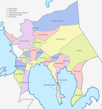

Rizal province is kwon for its stunning natural beauty, including picturesque mountains,waterfalls,and lakes.Some well-know tourists destanatoins includes Mount Dariatan, Tinipak River, and Masungi Goereserve.
HISTORY
The Province of Rizal was created by virtue of Act No. 137 of the Second Philippine Commission dated June 11, 1901. It was initially composed of 19 towns of Manila Province, and 14 municipalities of Morong Politico-Military District, or a total of 33 towns.
GEOGRAPHY

Rizal covers a total area of 1,182.65 square kilometers (456.62 sq mi) occupying the northern-central section of the Calabarzon in Luzon. The province is bordered on the north by Bulacan, east by Quezon, southeast by Laguna, south by Laguna de Bay, and west by Metro Manila.
DEMOGRAPHICS
The province is inhabited mostly by Tagalogs. Minority of other ethnic groups are visayas, ilocanos, and other local groups. It has a population of 2,284.046 with a labor force consisting of 1,272,000 or 55.7% of the total population.
ECONOMY
Province of Rizal Topped the CALABARZON Mining Industry With 82% of the Total Output Value in CY 2021. In the CALABARZON mining sector, the province of Rizal contributed the greatest percentage of total output value among the five provinces in the area, accounting for a hefty 82% of total output value.
TOURISM
Firstly, Rizal is a first-class province and home to many incredible sights and experiences—from undulating valleys to rolling hills, from pristine lakeshores to caves and waterfalls. It's also known as the Cradle of Philippine Art, boasting many galleries that showcase local artists' works.Rizal Province also Known as the Cradle of Philippine Art, the province attests to the creative tradition that has spawned generations of visual and performing artists. Be amazed at art masterpieces displayed at many local galleries in Angono. Discover the oldest known art dating as far back 3000 BC that is Angono-Binangonan Petroglyphs.
ATTRACTIONS
FIRST: The Pintô Art Museum is a contemporary art museum complex in Antipolo, Rizal, Philippines.SECOND: The Masungi Georeserve is a conservation area in the Philippines situated in the southern Sierra Madre range in Baras. It centers on the geological formations of Masungi Rock, at an elevation of 640 metres. THIRD: A beloved pilgrimage destination in the Philippines, Antipolo Cathedral enshrines the revered image of Our Lady of Peace and Good Voyage, known for her protection and blessings. Discover the historic Antipolo Cathedral, a renowned pilgrimage site steeped in the legend of the Our Lady of Peace and Good Voyage.
SCHOOLS AND UNIVERSITIES
University of Rizal System, Antipolo Campus ,Colegio de Montalban,Siena College of Taytay,STI College - Ortigas-Cainta,Asia-Pacific Nazarene Theological Seminary,Our Lady of Fatima University Valenzuela City,La Salle College Antipolo,International Christian College of Manila,ICCT Colleges - Binangonan Campus,National College of Business and Arts (NCBA) Quezon ,City Cainta Catholic College ,STI College Tanay,College of Arts and Sciences of Asia and the Pacific , this are the shools and unversities in rizal province.